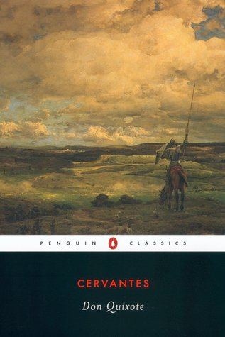

 Don Quixote has become so entranced by reading chivalric romances that he determines to become a knight-errant himself. In the company of his faithful squire, Sancho Panza, his exploits blossom in all sorts of wonderful ways. While Quixote's fancy often leads him astray—he tilts at windmills, imagining them to be giants—Sancho acquires cunning and a certain sagacity. Sane madman and wise fool, they roam the world together, and together they have haunted readers' imaginations for nearly four hundred years.